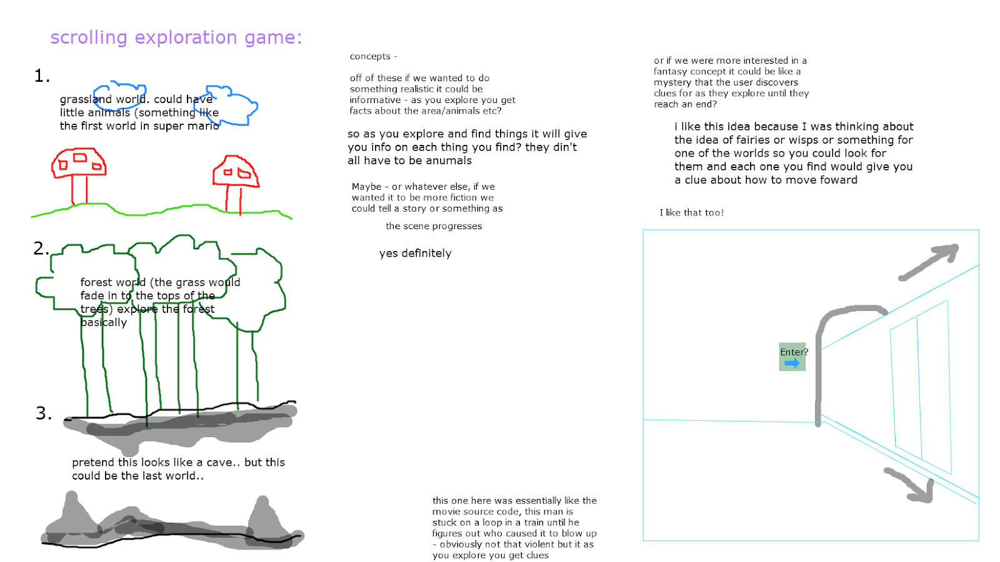

Exploratory Adventure Game
by Clare + Erin
Concept Formulation
-
Basic Overview Elements:
-
Exploratory map orientation.
-
Discover clues along a path by interacting with environment and characters.
-
Scroll onto each new discovered area.
-
Use the clues to ultimately find the missing character.

Main Considerations:
-
- Main Map Menu vs. Scroll Through
- need to visit each page in order, retrace steps in order
- visit each page directly or follow scroll through path
-
Should clues be revealed by clicks or hovers?
- items that are clickable are highlighted by an overlay when they are hovered over
- messages display when clicked
-
First person view or third person?
-
Should there be a single main character that the user plays as, or a small group
- (this could introduce different perspectives/ interpretations of the clues that the user has to then sort through?)
Wireframe: Story Mode
- Main character's friend has gone missing.
- The other characters must explore the map to find clues about where he may have gone and find him.